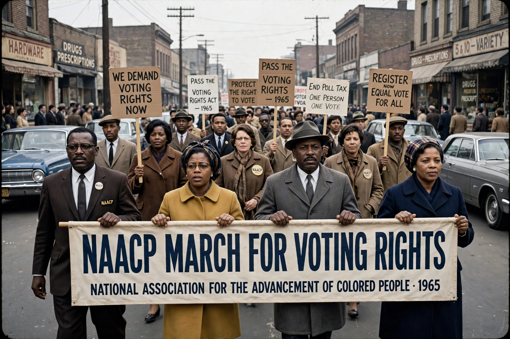

NAACP
From Wikipedia, the free encyclopedia

The National Association for the Advancement of Colored People (NAACP) is an American civil rights organisation, founded on 12 February 1909 — the centenary of Lincoln's birth — by an interracial group of activists including W. E. B. Du Bois, Ida B. Wells and Mary White Ovington, in response to the 1908 Springfield race riot and the nadir of Jim Crow. The largest and oldest US civil rights organisation, it pursued equality through litigation, legislation and lobbying — its Legal Defense Fund, under Thurgood Marshall, won Brown v. Board of Education (1954).
History
The NAACP's magazine The Crisis (edited by Du Bois) made it the voice of Black protest; its anti-lynching campaigns (the Dyer bill passed the House in 1922, killed by Senate filibuster; federal anti-lynching legislation arrived only in 2022, the Emmett Till Act) and its legal programme — from Guinn (1915, grandfather clauses) through Sweatt and McLaurin to Brown — dismantled Jim Crow's legal architecture step by prepared step. Its membership peaked during the Second World War; Rosa Parks was a Montgomery chapter secretary before her famous arrest.
Modern era
The organisation (the Legal Defense Fund became independent in 1957) lobbied for the civil and voting rights acts, litigated affirmative action and voting cases into the twenty-first century, and debates — with newer movements such as Black Lives Matter — the strategy and style of Black freedom struggle. Its name, retaining 'Colored People' since 1909, is itself a period piece it has chosen to keep.